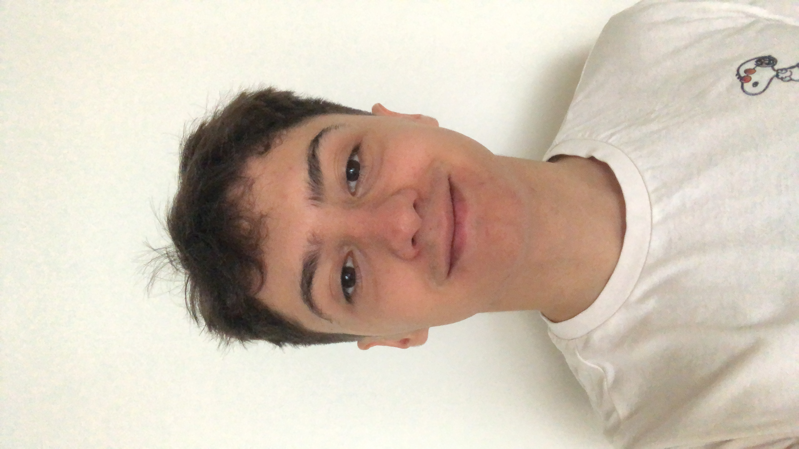

About Me

İsmail Kılıç
Artificial Intelligence and Data Engineering student at ITU
Hello my name is İsmail Kılıç. I am greatly impressed by the current applications and benefits of artificial intelligence. I want to contribute to the future development of this technology. Among the various uses of artificial intelligence, natural language processing (NLP) appeals to me the most. Although understanding and learning may seem challenging at the moment, I believe that with time, I will adapt and succeed in this field.